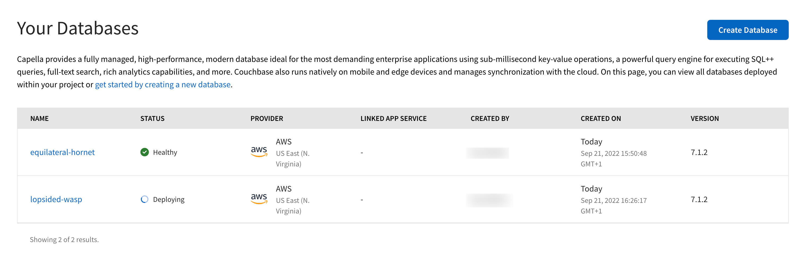
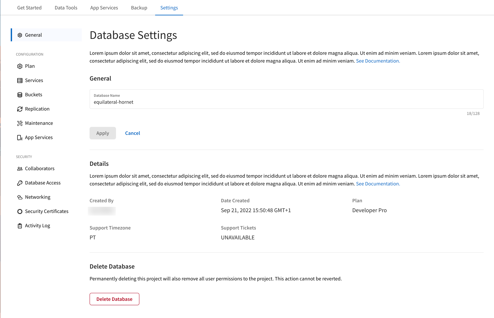
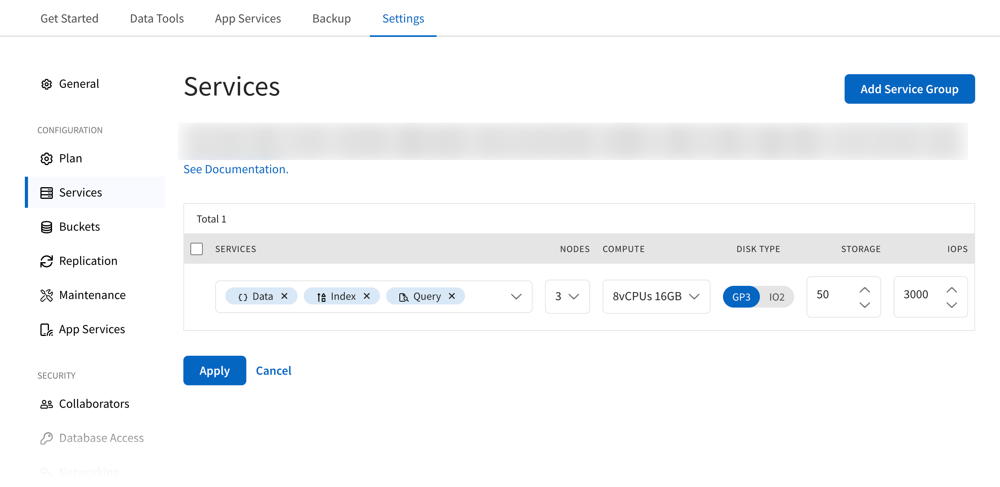
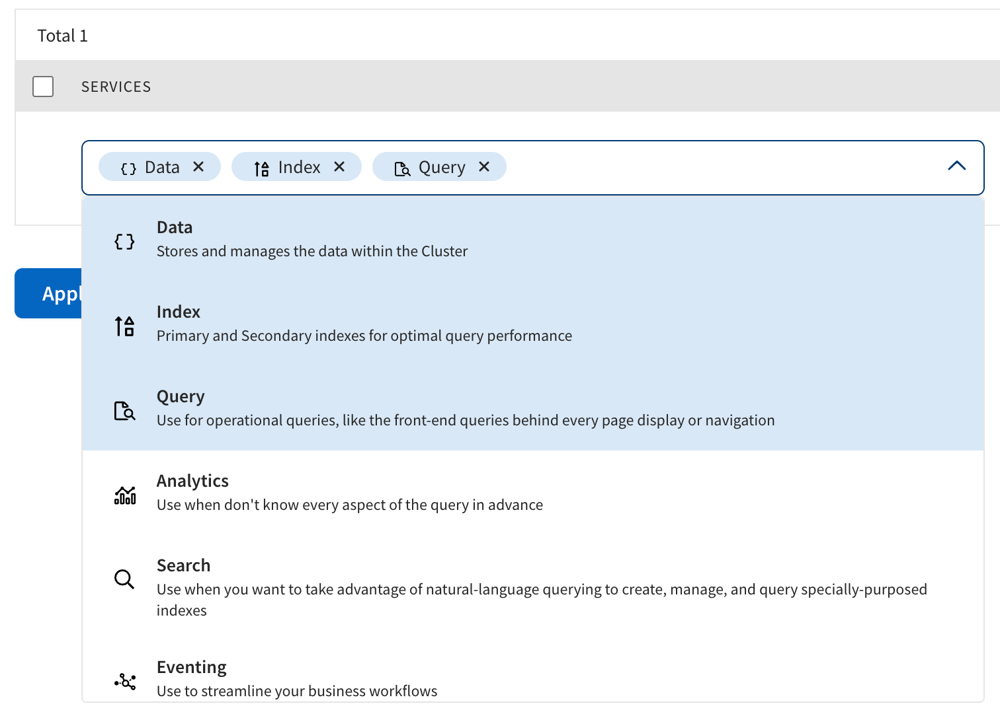
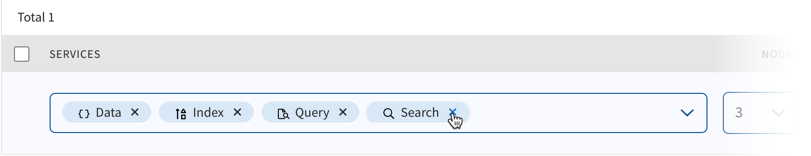

Modify a Database
Review, modify, and rename Couchbase Capella clusters.
Use the procedures on this page to modify an existing Couchbase Capella database. If you want to learn about scaling a cluster, see Database Scaling.
Change Options
You can change the following in a deployed Couchbase Capella cluster:
| Option | Actions | Considerations |
|---|---|---|
Database Name |
You can rename a database at any time. |
|
Plan |
You may be unable to downgrade a service plan if your cluster uses features specific to its current plan. |
|
Couchbase Services |
A service can only be added once to a cluster. The Data Service cannot be removed. These actions are not supported for clusters using your own cloud account (inVPC). |
|
Nodes |
The Data Service requires at least three nodes. All other services require at least two nodes. |
|
Compute |
Compute options depend on the chosen cloud provider. |
|
Disk Type |
AWS: The options are GP3 or IO2. GP3 is general purpose to balance price and performance where you can provision performance independent of storage capacity. IO2 is higher performance and more durable with better reliability. GCP: PD-SSD is the only disk type and cannot be changed. |
|
Storage |
You cannot decrease storage once it has been added to a cluster. |
|
IOPS |
AWS: The available IOPS range depends on the disk type. GCP: IOPS is not a directly configurable value. It’s set based on the amount of storage you’ve assigned to a service group (30 read and 30 write IOPS per GB). |
Prerequisites
|
Permissions Required
For any change, you must have the Project Owner or Database Manager role for the project containing the cluster you want to modify.
|
View Database Configuration
Before modifying a database, you can review a list of all individual nodes running on it. This list includes the hostname, status, and services associated with each node. It also describes each node’s CPU, RAM, and disk usage. Node statuses are Normal, Deploying, and Unhealthy. Nodes added or removed from a cluster are shown or removed as appropriate.
-
Select your project from the project window. This will take you to your list of databases:
 -
Select the database you wish to review.
-
Select the Settings tab, which will take you to the
Database Settingspage. -
Now, click Services from the
Generalmenu on the left:Figure 1. Database services pageFrom this page you can change the services, nodes and resources for your database.
Modify the Database Configuration
| When using Capella with your own cloud account (inVPC), you cannot decrease the number of nodes, change the capacity (VM instance type), or change the storage of service nodes. |
| Cluster configuration options depend on the cluster’s cloud provider. For more information on the configuration options available for each cloud provider, see Amazon Web Services (AWS) and Google Cloud Platform (GCP). |
Add a Service
|
Limitations
You cannot add a service to a database when the same service is already on the same database.
|
Service groups allow you to create node configurations for specified Couchbase services.
-
Go to the database’s services configuration page (see Figure 1).
-
Use the Services dropdown to add services to your database:

Add more services to an existing service group by clicking the Services drop-down menu and selecting the services you require. Alternatively, you can add more service groups by clicking Add Service Group.
Only services not on the cluster are available to add.
Once you add a service to a new or existing service group, you may need to adjust its hardware configuration. For more information on sizing a cluster, see Sizing a Cluster.
-
If you have no other cluster changes to make, you need to review and apply your current changes.
Remove a Service
|
Limitations
You cannot remove the Data Service.
|
-
Go to the database’s services configuration page (see Figure 1).
-
To delete a service, click on the
Xagainst service name in theServiceslist: -
If you have no other cluster changes to make, you need to review and apply your current changes.
Add or Remove Nodes
|
Limitations
Services require a minimum of two nodes, except for the Data Service which needs three.
A cluster can have up to 27 nodes.
|
-
Go to the database’s services configuration page (see Figure 1).
-
Using the Nodes drop-down of the service group you’re modifying, choose a new number of nodes you want for this configuration.
-
If you have no other cluster changes to make, you need to review and apply your current changes.
Change Compute
-
Go to the database’s services configuration page (see Figure 1).
-
Using the Compute drop-down of the service group you’re modifying, choose a new compute instance type for this configuration.
The
computeoption dictates the number of vCPUs and memory provisioned for each node in a service group. -
If you have no other cluster changes to make, you need to review and apply your current changes.
Change Disk Type
|
Limitations
GCP only supports PD-SSD.
You can only change the disk type for clusters deployed with AWS (GP3 or IO2).
|
-
Go to the database’s services configuration page (see Figure 1).
-
Use the Disk Type toggle to switch between GP3 and IO2 for the configuration you’re modifying.
-
If you have no other cluster changes to make, you need to review and apply your current changes.
Increase Storage
|
Limitations
Storage cannot be removed from a service configuration once added.
|
-
Go to the cluster’s Configuration tab.
-
Using the Storage field of the service group you’re modifying, increment to or enter the amount (GB) of storage you want per node for this configuration.
-
If you have no other cluster changes to make, you need to review and apply your current changes.
Change IOPS
|
Limitations
IOPS (Input/Output Operations per Second) is not a directly configurable value for clusters deployed with GCP.
Instead, it’s automatically set at 30 reads and 30 writes IOPS per GB of storage provisioned.
|
-
Go to the database’s services configuration page (see Figure 1).
-
Using the IOPS field, increment to or enter the IOPS value for the service group you’re modifying.
This field is not shown when a cluster uses GCP as its cloud provider.
-
If you have no other cluster changes to make, you need to review and apply your current changes.
Review and Apply Changes
-
Review and update configuration
Any changes you make to a cluster appear on the Configuration page. Review this new configuration to that it meets your requirements.
Any warnings about your proposed changes are shown on the page and will not let you update the configuration until you resolve them. If you need to discard your changes, click Cancel.
-
Once you have reviewed the changes, click Update Configuration.
-
In the notification that appears, click Confirm.
The cluster will rebalance and redistribute service data over the new superset of nodes. The amount of time taken for the new nodes to rebalance into the cluster depends on the service of the new nodes, and how much data is redistributed. The cluster remains up and available during the rebalance, but you will not be able to make further changes until the rebalancing is complete.
Rename a Database
-
From the Clusters tab, find the cluster you want to rename and click its name.
This opens the cluster with its Metrics tab selected.
-
Click the vertical ellipsis icon to the right of the cluster’s name.
-
From the drop-down menu, click Edit Cluster Name.
This action opens the Update Cluster Name flyout.
-
In the field provided, type a new name for the cluster.
-
Click Update Cluster Name.
The cluster name is updated immediately.